第八章 向量代数与空间解析几何
在平面解析几何中，通过坐标法把平面上的点与一对有次序的数对应起来，把平面上的图形和方程对应起来，从而可以用代数方法来研究几何问题. 空间解析几何也是按照类似的方法建立起来的. 正像平面解析几何的知识对学习一元函数微积分是不可缺少的一样，空间解析几何的知识对学习多元函数微积分也是必要的. 本章先引进向量的概念，根据向量的线性运算建立空间坐标系，然后利用坐标讨论向量的运算，并介绍空间解析几何的有关内容.
第一节 向量及其线性运算
一、向量的概念
客观世界中有这样一类量，它们既有大小，又有方向，例如位移、速度、加速度、力、力矩等，这一类量叫做向量（或矢量）.
在数学上，常用一条有方向的线段，即有向线段来表示向量. 有向线段的长度表示向量的大小，有向线段的方向表示向量的方向. 以 $A$ 为起点、$B$ 为终点的有向线段所表示的向量记作 $\vec{AB}$（图 8-1）. 有时也用一个黑体字母（书写时在字母上面加箭头）来表示向量，例如 $\boldsymbol{a}, \boldsymbol{b}, \boldsymbol{r}, \boldsymbol{F}$ 或 $\vec{a}, \vec{b}, \vec{r}, \vec{F}$ 等.
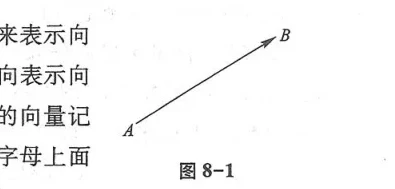
在实际问题中，有些向量与其起点有关（例如质点运动的速度与该质点的位置有关，一个力与该力的作用点的位置有关），有些向量与其起点无关. 由于一切向量的共性是它们都有大小和方向，因此在数学上我们只研究与起点无关的向量，并称这种向量为自由向量（以后简称向量），即只考虑向量的大小和方向，而不论它的起点在什么地方. 当遇到与起点有关的向量时，可在一般原则下作特别处理.
由于我们只讨论自由向量，所以如果两个向量 $\boldsymbol{a}$ 和 $\boldsymbol{b}$ 的大小相等，且方向相同，我们就说向量 $\boldsymbol{a}$ 和 $\boldsymbol{b}$ 是相等的，记作 $\boldsymbol{a} = \boldsymbol{b}$. 这就是说，经过平行移动后能完全重合的向量是相等的.
向量的大小叫做向量的模. 向量 $\vec{AB}, \boldsymbol{a}$ 和 $\boldsymbol{b}$ 的模依次记作 $|\vec{AB}|, |\boldsymbol{a}|$ 和 $|\boldsymbol{b}|$. 模等于 1 的向量叫做单位向量；模等于零的向量叫做零向量，记作 $\mathbf{0}$ 或 $\vec{0}$. 零向量的起点和终点重合，它的方向可以看作是任意的.
设有两个非零向量 $\boldsymbol{a}, \boldsymbol{b}$，任取空间一点 $O$，作 $\vec{OA} = \boldsymbol{a}, \vec{OB} = \boldsymbol{b}$，规定不超过 $\pi$ 的 $\angle AOB$（设 $\theta = \angle AOB, 0 \le \theta \le \pi$）称为向量 $\boldsymbol{a}$ 与 $\boldsymbol{b}$ 的夹角（图 8-2），记作 $(\widehat{\boldsymbol{a}, \boldsymbol{b}})$ 或 $(\widehat{\boldsymbol{b}, \boldsymbol{a}})$，即 $(\widehat{\boldsymbol{a}, \boldsymbol{b}}) = \theta$. 如果向量 $\boldsymbol{a}$ 与 $\boldsymbol{b}$ 中有一个是零向量，规定它们的夹角可以在 $0$ 到 $\pi$ 之间任意取值. 若两向量 $\boldsymbol{a}$ 与 $\boldsymbol{b}$ 的夹角为 $\frac{\pi}{2}$，则称向量 $\boldsymbol{a}$ 与 $\boldsymbol{b}$ 垂直，记作 $\boldsymbol{a} \perp \boldsymbol{b}$. 由于零向量与另一向量的夹角可以任意取值，因此可以认为零向量与任何向量都平行，也可以认为零向量与任何向量都垂直.
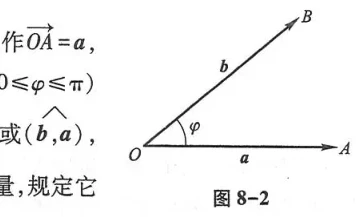
当两个平行向量的起点放在同一点时，它们的终点和公共起点应在一条直线上. 因此，两向量平行，又称两向量共线.
类似地还有向量共面的概念. 设有 $k$ ($k \ge 3$) 个向量，当把它们的起点放在同一点时，如果 $k$ 个终点和公共起点在一个平面上，就称这 $k$ 个向量共面.
二、向量的线性运算
1. 向量的加减法
向量的加法运算规定如下：
设有两个向量 $\boldsymbol{a}$ 与 $\boldsymbol{b}$，任取一点 $A$，作 $\vec{AB} = \boldsymbol{a}$，再以 $B$ 为起点，作 $\vec{BC} = \boldsymbol{b}$，连接 $AC$（图 8-3），那么向量 $\vec{AC}$ 称为向量 $\boldsymbol{a}$ 与 $\boldsymbol{b}$ 的和，记作 $\boldsymbol{a} + \boldsymbol{b}$，即
$$\vec{AC} = \boldsymbol{a} + \boldsymbol{b}$$
上述作出两向量之和的方法叫做向量相加的三角形法则.
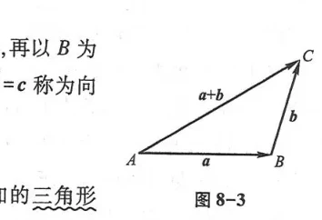
力学上有求合力的平行四边形法则，仿此，我们也有向量相加的平行四边形法则. 这就是：当向量 $\boldsymbol{a}$ 与 $\boldsymbol{b}$ 不平行时，作 $\vec{AB} = \boldsymbol{a}, \vec{AD} = \boldsymbol{b}$，以 $AB, AD$ 为边作一平行四边形 $ABCD$，连接对角线 $AC$（图 8-4），显然向量 $\vec{AC}$ 即等于向量 $\boldsymbol{a}$ 与 $\boldsymbol{b}$ 的和 $\boldsymbol{a} + \boldsymbol{b}$.
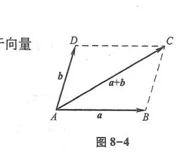
向量的加法符合下列运算规律：
(1) 交换律：$\boldsymbol{a} + \boldsymbol{b} = \boldsymbol{b} + \boldsymbol{a}$；
(2) 结合律：$(\boldsymbol{a} + \boldsymbol{b}) + \boldsymbol{c} = \boldsymbol{a} + (\boldsymbol{b} + \boldsymbol{c})$.
这是因为，按向量加法的三角形法则，从图 8-4 可见：$\vec{AB} + \vec{BC} = \vec{AD} + \vec{DC} = \vec{AC}$，所以符合交换律. 又如图 8-5 所示，先作 $\boldsymbol{a} + \boldsymbol{b}$ 再加上 $\boldsymbol{c}$，即得和 $(\boldsymbol{a} + \boldsymbol{b}) + \boldsymbol{c}$；若以 $\boldsymbol{a}$ 与 $\boldsymbol{b} + \boldsymbol{c}$ 相加，则得同一结果，所以符合结合律.
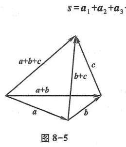
由于向量加法符合交换律与结合律，故 $n$ 个向量 $\boldsymbol{a}_1, \boldsymbol{a}_2, \dots, \boldsymbol{a}_n$ ($n \ge 3$) 相加可直接写成 $\boldsymbol{a}_1 + \boldsymbol{a}_2 + \dots + \boldsymbol{a}_n$. 依照三角形法则，可得 $n$ 个向量相加的多边形法则：以前一向量的终点作为后一向量的起点，相继作出向量 $\boldsymbol{a}_1, \boldsymbol{a}_2, \dots, \boldsymbol{a}_n$，再以第一个向量的起点为起点，最后一个向量的终点为终点作一向量，这个向量即为所求的和（图 8-6），即
$$\boldsymbol{s} = \boldsymbol{a}_1 + \boldsymbol{a}_2 + \boldsymbol{a}_3 + \boldsymbol{a}_4 + \boldsymbol{a}_5$$
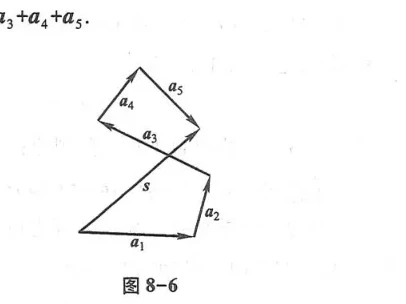
设 $\boldsymbol{a}$ 为一向量，与 $\boldsymbol{a}$ 的模相同而方向相反的向量叫做 $\boldsymbol{a}$ 的负向量，记作 $-\boldsymbol{a}$. 由此，我们规定两个向量 $\boldsymbol{b}$ 与 $\boldsymbol{a}$ 的差为
$$\boldsymbol{b} - \boldsymbol{a} = \boldsymbol{b} + (-\boldsymbol{a})$$
特别地，当 $\boldsymbol{b} = \boldsymbol{a}$ 时，有 $\boldsymbol{a} - \boldsymbol{a} = \boldsymbol{a} + (-\boldsymbol{a}) = \mathbf{0}$. 显然，任给向量 $\vec{AB}$ 及空间任意一点 $O$，有 $\vec{AB} = \vec{AO} + \vec{OB} = \vec{OB} - \vec{OA}$. 因此，若把向量 $\boldsymbol{a}$ 与 $\boldsymbol{b}$ 移到同一起点 $O$，则从 $\boldsymbol{a}$ 的终点 $A$ 指向 $\boldsymbol{b}$ 的终点 $B$ 所引出的向量便是向量 $\boldsymbol{b}$ 与 $\boldsymbol{a}$ 的差 $\boldsymbol{b} - \boldsymbol{a}$（图 8-7）.
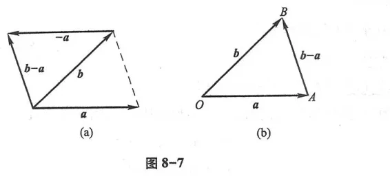
根据三角形两边之和大于第三边，对于任意两向量有三角不等式：
$$\big| |\boldsymbol{a}| - |\boldsymbol{b}| \big| \le |\boldsymbol{a} \pm \boldsymbol{b}| \le |\boldsymbol{a}| + |\boldsymbol{b}|$$
其中等号当且仅当 $\boldsymbol{a}$ 与 $\boldsymbol{b}$ 同向或反向时成立.
2. 向量与数的乘法
向量 $\boldsymbol{a}$ 与实数 $\lambda$ 的乘积记作 $\lambda \boldsymbol{a}$，规定 $\lambda \boldsymbol{a}$ 是一个向量，它的模为
$$|\lambda \boldsymbol{a}| = |\lambda| |\boldsymbol{a}|$$
它的方向：当 $\lambda > 0$ 时与 $\boldsymbol{a}$ 相同；当 $\lambda < 0$ 时与 $\boldsymbol{a}$ 相反；当 $\lambda = 0$ 时，$\lambda \boldsymbol{a} = \mathbf{0}$，方向任意.
向量与数的乘法满足下列运算规律：
(1) 结合律：$\lambda(\mu \boldsymbol{a}) = \mu(\lambda \boldsymbol{a}) = (\lambda\mu)\boldsymbol{a}$；
(2) 分配律：$(\lambda + \mu)\boldsymbol{a} = \lambda\boldsymbol{a} + \mu\boldsymbol{a}$，$\lambda(\boldsymbol{a} + \boldsymbol{b}) = \lambda\boldsymbol{a} + \lambda\boldsymbol{b}$.
在平行四边形 $ABCD$ 中，设 $\vec{AB} = \boldsymbol{a}, \vec{AD} = \boldsymbol{b}$，$M$ 为对角线 $AC$ 与 $BD$ 的交点. 试用 $\boldsymbol{a}, \boldsymbol{b}$ 表示向量 $\vec{MC}$ 及 $\vec{MB}$（图 8-8）.
解 由于平行四边形的对角线互相平分，所以 $\vec{AC} = \boldsymbol{a} + \boldsymbol{b}$，$\vec{MC} = \frac{1}{2}\vec{AC} = \frac{1}{2}(\boldsymbol{a} + \boldsymbol{b})$.
又因为 $\vec{DB} = \vec{AB} - \vec{AD} = \boldsymbol{a} - \boldsymbol{b}$，所以 $\vec{MB} = \frac{1}{2}\vec{DB} = \frac{1}{2}(\boldsymbol{a} - \boldsymbol{b})$.
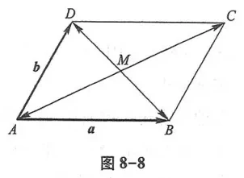
设 $\boldsymbol{e}_{\boldsymbol{a}}$ 表示与非零向量 $\boldsymbol{a}$ 同方向的单位向量，那么按照向量与数的乘积定义，由于 $|\boldsymbol{a}| > 0$，所以 $|\boldsymbol{a}|\boldsymbol{e}_{\boldsymbol{a}}$ 与 $\boldsymbol{a}$ 方向相同，且模相等，因此
$$\boldsymbol{a} = |\boldsymbol{a}|\boldsymbol{e}_{\boldsymbol{a}} \iff \boldsymbol{e}_{\boldsymbol{a}} = \frac{\boldsymbol{a}}{|\boldsymbol{a}|}$$
这表示一个非零向量除以它的模，结果是一个与原向量同方向的单位向量.
设向量 $\boldsymbol{a} \ne \mathbf{0}$，则向量 $\boldsymbol{b}$ 平行于 $\boldsymbol{a}$ 的充要条件是：存在唯一的实数 $\lambda$，使
$$\boldsymbol{b} = \lambda \boldsymbol{a}$$
证明三角形中位线平行于底边且等于底边的一半（图 8-9）.
证 设在 $\triangle ABC$ 中，$D, E$ 分别为边 $AB, AC$ 的中点. 设 $\vec{AB} = \boldsymbol{b}, \vec{AC} = \boldsymbol{c}$.
则 $\vec{AD} = \frac{1}{2}\boldsymbol{b}, \vec{AE} = \frac{1}{2}\boldsymbol{c}$. 于是
$$\vec{DE} = \vec{AE} - \vec{AD} = \frac{1}{2}\boldsymbol{c} - \frac{1}{2}\boldsymbol{b} = \frac{1}{2}(\boldsymbol{c} - \boldsymbol{b})$$
而底边 $\vec{BC} = \vec{AC} - \vec{AB} = \boldsymbol{c} - \boldsymbol{b}$，故 $\vec{DE} = \frac{1}{2}\vec{BC}$.
由定理 1 可知，向量 $\vec{DE}$ 与 $\vec{BC}$ 平行，且模为其一半，即 $DE \parallel BC$ 且 $DE = \frac{1}{2}BC$. 证毕.
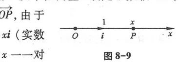
三、空间直角坐标系
过空间定点 $O$ 作三条互相垂直的数轴，分别称为 $x$ 轴（横轴）、$y$ 轴（纵轴）和 $z$ 轴（竖轴），它们通常具有相同的长度单位. 这三条坐标轴的方向通常符合右手规则：即当右手拇指指向 $z$ 轴正向时，四指从 $x$ 轴正向以 $\frac{\pi}{2}$ 角转向 $y$ 轴正向（图 8-10）. 这样建立起来的坐标系称为空间直角坐标系，点 $O$ 称为坐标原点.
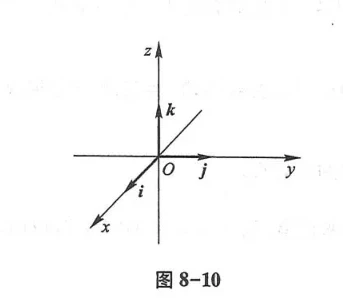
由每对坐标轴所确定的平面称为坐标面，它们分别是 $xOy$ 面、$yOz$ 面和 $zOx$ 面. 这三个坐标面把空间分成八个部分，每一部分称为一个卦限.
空间任一点 $M$ 的位置可由有序三元实数组 $(x, y, z)$ 唯一确定，记作 $M(x, y, z)$.
设空间两点为 $A(x_1, y_1, z_1)$ 和 $B(x_2, y_2, z_2)$，则 $A, B$ 两点间的距离为
$$|AB| = d = \sqrt{(x_2 - x_1)^2 + (y_2 - y_1)^2 + (z_2 - z_1)^2}$$
特别地，点 $M(x, y, z)$ 到原点 $O(0, 0, 0)$ 的距离为 $|OM| = \sqrt{x^2 + y^2 + z^2}$.
四、利用坐标作向量的线性运算
分别取沿 $x, y, z$ 轴正方向的单位向量，记为 $\mathbf{i}, \mathbf{j}, \mathbf{k}$，称为基本单位向量. 空间任一向量 $\boldsymbol{a}$ 均可唯一表示为
$$\boldsymbol{a} = a_x \mathbf{i} + a_y \mathbf{j} + a_z \mathbf{k}$$
三元数组 $(a_x, a_y, a_z)$ 称为向量 $\boldsymbol{a}$ 的坐标，简记为 $\boldsymbol{a} = (a_x, a_y, a_z)$.
若起点为 $A(x_1, y_1, z_1)$，终点为 $B(x_2, y_2, z_2)$，则向量 $\vec{AB}$ 的坐标为：
$$\vec{AB} = (x_2 - x_1, y_2 - y_1, z_2 - z_1)$$
向量线性运算的坐标形式：
(1) 加减法：$\boldsymbol{a} \pm \boldsymbol{b} = (a_x \pm b_x, a_y \pm b_y, a_z \pm b_z)$；
(2) 数乘：$\lambda \boldsymbol{a} = (\lambda a_x, \lambda a_y, \lambda a_z)$；
(3) 向量平行的充要条件（坐标成比例）：
$$\boldsymbol{a} \parallel \boldsymbol{b} \iff \frac{b_x}{a_x} = \frac{b_y}{a_y} = \frac{b_z}{a_z} = \lambda$$
五、向量的模、方向角、投影
(1) 向量的模：$|\boldsymbol{a}| = \sqrt{a_x^2 + a_y^2 + a_z^2}$；
(2) 方向角与方向余弦：非零向量 $\boldsymbol{a}$ 与三坐标轴正向的夹角 $\alpha, \beta, \gamma$ 称为方向角，其余弦为：
$$\cos\alpha = \frac{a_x}{|\boldsymbol{a}|}, \quad \cos\beta = \frac{a_y}{|\boldsymbol{a}|}, \quad \cos\gamma = \frac{a_z}{|\boldsymbol{a}|}$$
且满足重要恒等式：
$$\cos^2\alpha + \cos^2\beta + \cos^2\gamma = 1$$
(3) 投影定理：向量 $\boldsymbol{a}$ 在轴 $u$ 上的投影记作 $\mathrm{Prj}_u \boldsymbol{a} = |\boldsymbol{a}|\cos\varphi$，其中 $\varphi$ 为 $\boldsymbol{a}$ 与轴 $u$ 的夹角.
习题 8-1
1. 设向量 $\boldsymbol{a} = (1, -2, 3), \boldsymbol{b} = (2, 1, -1)$，求 $2\boldsymbol{a} - 3\boldsymbol{b}$ 及其模和方向余弦.
2. 求以点 $A(1, 2, 3)$ 和 $B(2, -1, 5)$ 为端点的线段的中点坐标及两点间距离.
3. 已知向量 $\boldsymbol{a}$ 与 $x$ 轴、$y$ 轴的夹角分别为 $60^\circ$ 和 $45^\circ$，且与 $z$ 轴夹角为钝角，求此夹角及向量 $\boldsymbol{a}$ 的方向余弦.
4. 证明四边形 $ABCD$ 为平行四边形的充要条件是 $\vec{AB} = \vec{DC}$.
第二节 数量积 向量积 *混合积
一、两向量的数量积 (点乘)
两向量 $\boldsymbol{a}$ 与 $\boldsymbol{b}$ 的模与它们的夹角 $\theta$ 的余弦的乘积，叫做向量 $\boldsymbol{a}$ 与 $\boldsymbol{b}$ 的数量积（或点积、内积），记作 $\boldsymbol{a} \cdot \boldsymbol{b}$，即
$$\boldsymbol{a} \cdot \boldsymbol{b} = |\boldsymbol{a}||\boldsymbol{b}|\cos\theta$$
数量积的重要性质：
(1) $\boldsymbol{a} \cdot \boldsymbol{a} = |\boldsymbol{a}|^2$，即 $|\boldsymbol{a}| = \sqrt{\boldsymbol{a} \cdot \boldsymbol{a}}$；
(2) 正交充要条件：两非零向量 $\boldsymbol{a} \perp \boldsymbol{b} \iff \boldsymbol{a} \cdot \boldsymbol{b} = 0$；
(3) 运算规律：交换律 $\boldsymbol{a} \cdot \boldsymbol{b} = \boldsymbol{b} \cdot \boldsymbol{a}$；数乘结合律 $(\lambda\boldsymbol{a})\cdot\boldsymbol{b} = \lambda(\boldsymbol{a}\cdot\boldsymbol{b})$；分配律 $(\boldsymbol{a} + \boldsymbol{b})\cdot\boldsymbol{c} = \boldsymbol{a}\cdot\boldsymbol{c} + \boldsymbol{b}\cdot\boldsymbol{c}$.
设 $\boldsymbol{a} = (a_x, a_y, a_z), \boldsymbol{b} = (b_x, b_y, b_z)$，则
$$\boldsymbol{a} \cdot \boldsymbol{b} = a_x b_x + a_y b_y + a_z b_z$$
两非零向量夹角 $\theta$ 的余弦公式为：
$$\cos\theta = \frac{\boldsymbol{a} \cdot \boldsymbol{b}}{|\boldsymbol{a}||\boldsymbol{b}|} = \frac{a_x b_x + a_y b_y + a_z b_z}{\sqrt{a_x^2 + a_y^2 + a_z^2}\sqrt{b_x^2 + b_y^2 + b_z^2}}$$
垂直充要条件的坐标形式：$a_x b_x + a_y b_y + a_z b_z = 0$.
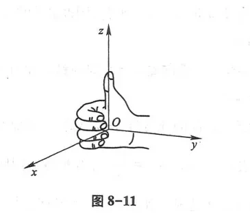
二、两向量的向量积 (叉乘)
两向量 $\boldsymbol{a}$ 与 $\boldsymbol{b}$ 的向量积（或叉积、外积）是一个向量，记作 $\boldsymbol{a} \times \boldsymbol{b}$，规定：
(1) 模长：$|\boldsymbol{a} \times \boldsymbol{b}| = |\boldsymbol{a}||\boldsymbol{b}|\sin\theta$（其几何意义为以 $\boldsymbol{a}, \boldsymbol{b}$ 为邻边的平行四边形的面积，图 8-12）；
(2) 方向：垂直于 $\boldsymbol{a}$ 与 $\boldsymbol{b}$ 所决定的平面，且 $\boldsymbol{a}, \boldsymbol{b}, \boldsymbol{a} \times \boldsymbol{b}$ 符合右手规则（图 8-13）.
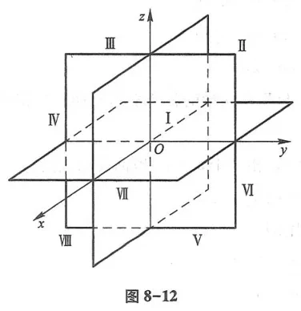
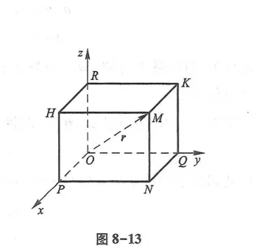
向量积的重要性质与运算规律：
(1) 反交换律：$\boldsymbol{b} \times \boldsymbol{a} = -(\boldsymbol{a} \times \boldsymbol{b})$；
(2) 平行充要条件：两非零向量 $\boldsymbol{a} \parallel \boldsymbol{b} \iff \boldsymbol{a} \times \boldsymbol{b} = \mathbf{0}$；
(3) 分配律与数乘结合律：$(\boldsymbol{a} + \boldsymbol{b})\times\boldsymbol{c} = \boldsymbol{a}\times\boldsymbol{c} + \boldsymbol{b}\times\boldsymbol{c}$，$(\lambda\boldsymbol{a})\times\boldsymbol{b} = \lambda(\boldsymbol{a}\times\boldsymbol{b})$.
设 $\boldsymbol{a} = (a_x, a_y, a_z), \boldsymbol{b} = (b_x, b_y, b_z)$，则向量积可用三阶行列式表示为：
$$\boldsymbol{a} \times \boldsymbol{b} = \begin{vmatrix} \mathbf{i} & \mathbf{j} & \mathbf{k} \\ a_x & a_y & a_z \\ b_x & b_y & b_z \end{vmatrix} = \begin{vmatrix} a_y & a_z \\ b_y & b_z \end{vmatrix}\mathbf{i} - \begin{vmatrix} a_x & a_z \\ b_x & b_z \end{vmatrix}\mathbf{j} + \begin{vmatrix} a_x & a_y \\ b_x & b_y \end{vmatrix}\mathbf{k}$$
已知 $\triangle ABC$ 的三顶点为 $A(1, 1, 1), B(2, 2, 2), C(1, 3, 2)$，求 $\triangle ABC$ 的面积.
解 作向量 $\vec{AB} = (1, 1, 1), \vec{AC} = (0, 2, 1)$. 计算向量积：
$$\vec{AB} \times \vec{AC} = \begin{vmatrix} \mathbf{i} & \mathbf{j} & \mathbf{k} \\ 1 & 1 & 1 \\ 0 & 2 & 1 \end{vmatrix} = (1-2)\mathbf{i} - (1-0)\mathbf{j} + (2-0)\mathbf{k} = -\mathbf{i} - \mathbf{j} + 2\mathbf{k} = (-1, -1, 2)$$
以 $\vec{AB}, \vec{AC}$ 为边的三角形面积为平行四边形面积的一半：
$$S_{\triangle ABC} = \frac{1}{2}|\vec{AB} \times \vec{AC}| = \frac{1}{2}\sqrt{(-1)^2 + (-1)^2 + 2^2} = \frac{\sqrt{6}}{2}$$
三、*向量的混合积
三个向量 $\boldsymbol{a}, \boldsymbol{b}, \boldsymbol{c}$，先作 $\boldsymbol{a}$ 与 $\boldsymbol{b}$ 的向量积 $\boldsymbol{a} \times \boldsymbol{b}$，再与 $\boldsymbol{c}$ 作数量积，所得数 $(\boldsymbol{a} \times \boldsymbol{b}) \cdot \boldsymbol{c}$ 称为三个向量的混合积，记作 $[\boldsymbol{a}\ \boldsymbol{b}\ \boldsymbol{c}]$.
几何意义：混合积的绝对值 $|[\boldsymbol{a}\ \boldsymbol{b}\ \boldsymbol{c}]|$ 等于以 $\boldsymbol{a}, \boldsymbol{b}, \boldsymbol{c}$ 为棱构成的平行六面体的体积（图 8-14）.
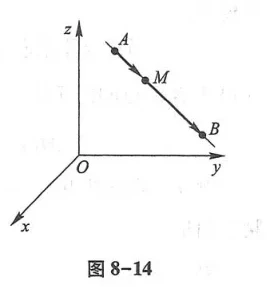
混合积的行列式表达式为：
$$[\boldsymbol{a}\ \boldsymbol{b}\ \boldsymbol{c}] = \begin{vmatrix} a_x & a_y & a_z \\ b_x & b_y & b_z \\ c_x & c_y & c_z \end{vmatrix}$$
共面充要条件：三向量 $\boldsymbol{a}, \boldsymbol{b}, \boldsymbol{c}$ 共面的充要条件是 $[\boldsymbol{a}\ \boldsymbol{b}\ \boldsymbol{c}] = 0$.
习题 8-2
1. 设 $\boldsymbol{a} = (1, 2, -1), \boldsymbol{b} = (3, 0, 2)$，求 $\boldsymbol{a} \cdot \boldsymbol{b}, \boldsymbol{a} \times \boldsymbol{b}$ 及夹角 $\theta$.
2. 已知力 $\boldsymbol{F} = (2, 3, 4)$ 作用于物体，使物体从点 $A(1, 0, 1)$ 沿直线移动到点 $B(3, 2, 2)$，求力 $\boldsymbol{F}$ 所作的功.
3. 判断三向量 $\boldsymbol{a} = (1, 2, 3), \boldsymbol{b} = (2, 1, 3), \boldsymbol{c} = (3, 3, 6)$ 是否共面.
第三节 平面及其方程
一、平面的点法式方程
垂直于平面的任意非零向量 $\boldsymbol{n} = (A, B, C)$ 称为该平面的法向量（图 8-20）.
过定点 $M_0(x_0, y_0, z_0)$，以 $\boldsymbol{n} = (A, B, C)$ 为法向量的平面方程为：
$$A(x - x_0) + B(y - y_0) + C(z - z_0) = 0$$
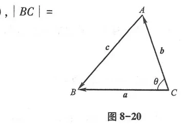
二、平面的一般方程
空间任意平面都可以表示为三元一次方程：
$$Ax + By + Cz + D = 0 \quad (A^2 + B^2 + C^2 \ne 0)$$
反之，任何三元一次方程的图形必为一个平面，其法向量为 $\boldsymbol{n} = (A, B, C)$.
特殊平面的位置特征：
- $D = 0$ 时，平面过原点 $O(0, 0, 0)$；
- $A = 0$ 时，法向量 $\boldsymbol{n} = (0, B, C) \perp x$ 轴，平面平行于 $x$ 轴；若同时 $D=0$，则平面包含 $x$ 轴；
- $A = B = 0$ 时，方程为 $Cz + D = 0$，即 $z = -\frac{D}{C}$，平面平行于 $xOy$ 坐标面.
平面的截距式方程：若平面在三坐标轴上的截距分别为 $a, b, c$ ($abc \ne 0$)，则方程为（图 8-21）：
$$\frac{x}{a} + \frac{y}{b} + \frac{z}{c} = 1$$
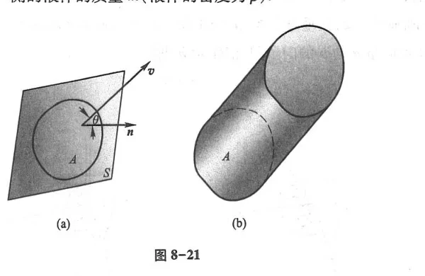
三、两平面的位置关系与夹角
设有两平面 $\Pi_1: A_1 x + B_1 y + C_1 z + D_1 = 0$ 与 $\Pi_2: A_2 x + B_2 y + C_2 z + D_2 = 0$，其法向量分别为 $\boldsymbol{n}_1 = (A_1, B_1, C_1), \boldsymbol{n}_2 = (A_2, B_2, C_2)$（图 8-22）.
两平面的夹角 $\theta$ ($0 \le \theta \le \frac{\pi}{2}$) 满足：
$$\cos\theta = \frac{|\boldsymbol{n}_1 \cdot \boldsymbol{n}_2|}{|\boldsymbol{n}_1||\boldsymbol{n}_2|} = \frac{|A_1 A_2 + B_1 B_2 + C_1 C_2|}{\sqrt{A_1^2 + B_1^2 + C_1^2}\sqrt{A_2^2 + B_2^2 + C_2^2}}$$
(1) 垂直条件：$\Pi_1 \perp \Pi_2 \iff A_1 A_2 + B_1 B_2 + C_1 C_2 = 0$；
(2) 平行条件：$\Pi_1 \parallel \Pi_2 \iff \frac{A_1}{A_2} = \frac{B_1}{B_2} = \frac{C_1}{C_2}$.
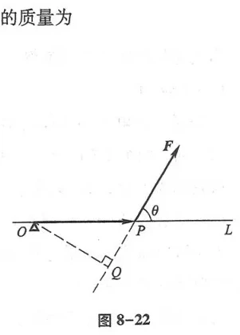
空间任意一点 $P_0(x_0, y_0, z_0)$ 到平面 $Ax + By + Cz + D = 0$ 的距离为：
$$d = \frac{|Ax_0 + By_0 + Cz_0 + D|}{\sqrt{A^2 + B^2 + C^2}}$$
习题 8-3
1. 求过点 $M_0(2, -1, 3)$ 且垂直于向量 $\boldsymbol{n} = (3, 2, -4)$ 的平面方程.
2. 求过三点 $A(1, 0, 0), B(0, 2, 0), C(0, 0, 3)$ 的平面方程.
3. 求点 $P(1, 2, -1)$ 到平面 $2x - 2y + z + 5 = 0$ 的距离.
第四节 空间直线及其方程
一、空间直线的一般方程
空间直线可以看作是两个相交平面的交线，其一般方程为（图 8-25）：
$$\begin{cases} A_1 x + B_1 y + C_1 z + D_1 = 0 \\ A_2 x + B_2 y + C_2 z + D_2 = 0 \end{cases}$$
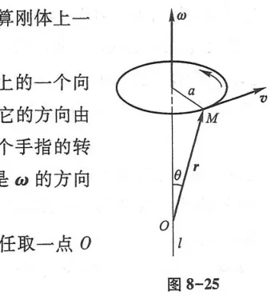
二、直线的对称式方程与参数方程
平行于直线的任意非零向量 $\boldsymbol{s} = (m, n, p)$ 称为直线的方向向量（图 8-26）.
过点 $M_0(x_0, y_0, z_0)$，以 $\boldsymbol{s} = (m, n, p)$ 为方向向量的直线方程为：
$$\frac{x - x_0}{m} = \frac{y - y_0}{n} = \frac{z - z_0}{p}$$
令上述比值为参数 $t$，可得直线的参数方程：
$$\begin{cases} x = x_0 + mt \\ y = y_0 + nt \\ z = z_0 + pt \end{cases}$$
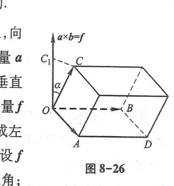
三、两直线的夹角与直线和平面的夹角
(1) 两直线的夹角：设方向向量分别为 $\boldsymbol{s}_1 = (m_1, n_1, p_1), \boldsymbol{s}_2 = (m_2, n_2, p_2)$，则夹角 $\varphi$ 满足：
$$\cos\varphi = \frac{|\boldsymbol{s}_1 \cdot \boldsymbol{s}_2|}{|\boldsymbol{s}_1||\boldsymbol{s}_2|} = \frac{|m_1 m_2 + n_1 n_2 + p_1 p_2|}{\sqrt{m_1^2 + n_1^2 + p_1^2}\sqrt{m_2^2 + n_2^2 + p_2^2}}$$
(2) 直线与平面的夹角：直线方向向量为 $\boldsymbol{s} = (m, n, p)$，平面法向量为 $\boldsymbol{n} = (A, B, C)$，二者夹角 $\psi$ 满足（图 8-27）：
$$\sin\psi = \frac{|\boldsymbol{n} \cdot \boldsymbol{s}|}{|\boldsymbol{n}||\boldsymbol{s}|} = \frac{|Am + Bn + Cp|}{\sqrt{A^2 + B^2 + C^2}\sqrt{m^2 + n^2 + p^2}}$$
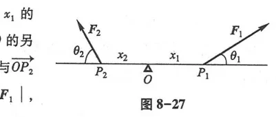
习题 8-4
1. 求过点 $M(1, -2, 4)$ 且以 $\boldsymbol{s} = (2, -1, 3)$ 为方向向量的直线的对称式方程和参数方程.
2. 求过两点 $A(2, 1, 3)$ 与 $B(4, -1, 0)$ 的直线方程.
3. 求直线 $\frac{x - 1}{2} = \frac{y + 1}{3} = \frac{z - 2}{1}$ 与平面 $2x - y + z - 5 = 0$ 的交点.
第五节 曲面及其方程
一、曲面方程的概念
如果曲面 $S$ 与三元方程 $F(x, y, z) = 0$ 之间具有关系：曲面上任一点的坐标都满足该方程，满足方程的任意点都在曲面上，则称 $F(x, y, z) = 0$ 为曲面 $S$ 的方程.
球面是空间解析几何中最简单的曲面. 球心为 $M_0(x_0, y_0, z_0)$、半径为 $R$ 的球面方程为：
$$(x - x_0)^2 + (y - y_0)^2 + (z - z_0)^2 = R^2$$
二、旋转曲面
平面上一条曲线绕该平面内一条定直线旋转一周所形成的曲面叫做旋转曲面. 该定直线称为旋转轴，动曲线称为母线（图 8-30）.
设坐标面 $yOz$ 上的曲线 $C$ 的方程为 $f(y, z) = 0$：
(1) 绕 $z$ 轴旋转所得的旋转曲面方程为：$f(\pm\sqrt{x^2 + y^2}, z) = 0$；
(2) 绕 $y$ 轴旋转所得的旋转曲面方程为：$f(y, \pm\sqrt{x^2 + z^2}) = 0$.
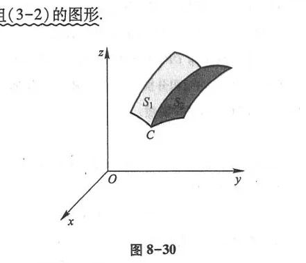
(1) 直线 $z = k y$ 绕 $z$ 轴旋转，所得旋转曲面为圆锥面（图 8-31），方程为：
$$z^2 = k^2 (x^2 + y^2) \iff \frac{x^2 + y^2}{a^2} - \frac{z^2}{c^2} = 0$$
(2) 双曲线 $\frac{y^2}{a^2} - \frac{z^2}{c^2} = 1$ 绕 $z$ 轴旋转，所得旋转曲面为旋转单叶双曲面（图 8-32），方程为：
$$\frac{x^2 + y^2}{a^2} - \frac{z^2}{c^2} = 1$$
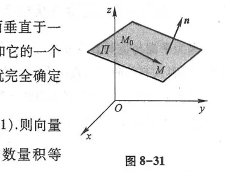
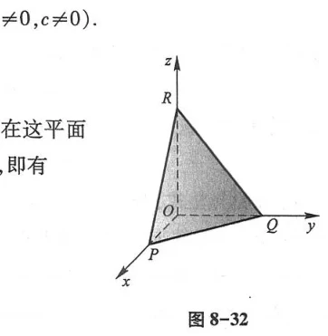
三、柱面
平行于定直线并沿定曲线 $C$ 移动的动直线 $l$ 所形成的曲面叫做柱面（图 8-33）. 定曲线 $C$ 叫做柱面的准线，动直线 $l$ 叫做柱面的母线.
只含两个坐标变量的二元方程 $F(x, y) = 0$ 在空间直角坐标系中表示母线平行于 $z$ 轴的柱面. 其准线为 $xOy$ 面上的曲线 $F(x, y) = 0$.
类似地，$G(y, z) = 0$ 表示母线平行于 $x$ 轴的柱面；$H(x, z) = 0$ 表示母线平行于 $y$ 轴的柱面.
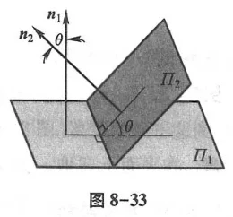
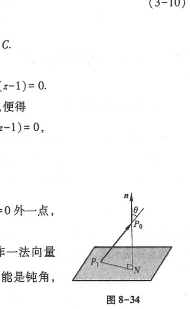
四、二次曲面
由三元二次方程所表示的曲面称为二次曲面. 常见标准方程如下：
(1) 椭球面（图 8-37）：
$$\frac{x^2}{a^2} + \frac{y^2}{b^2} + \frac{z^2}{c^2} = 1$$
(2) 椭圆抛物面（图 8-40）：
$$\frac{x^2}{a^2} + \frac{y^2}{b^2} = z \quad (a > 0, b > 0)$$
(3) 双曲抛物面（马鞍面）（图 8-41）：
$$\frac{x^2}{a^2} - \frac{y^2}{b^2} = z \quad (a > 0, b > 0)$$
(4) 单叶双曲面与双叶双曲面（图 8-38, 8-39）：
$$\text{单叶双曲面: } \frac{x^2}{a^2} + \frac{y^2}{b^2} - \frac{z^2}{c^2} = 1, \qquad \text{双叶双曲面: } \frac{x^2}{a^2} - \frac{y^2}{b^2} - \frac{z^2}{c^2} = 1$$
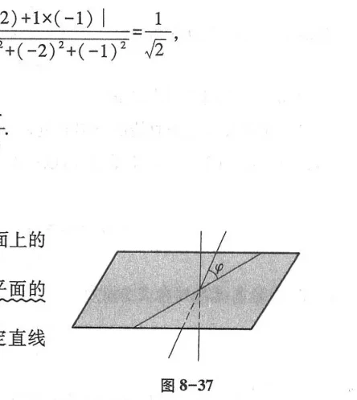
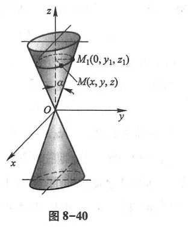
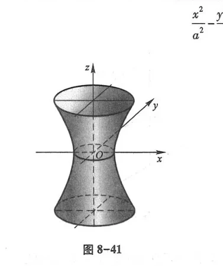
习题 8-5
1. 指出下列方程在空间解析几何中表示什么曲面：
(1) $x^2 + y^2 = 4$； (2) $x^2 + y^2 + z^2 - 2z = 0$； (3) $z = x^2 + y^2$； (4) $\frac{x^2}{4} + \frac{y^2}{9} - z^2 = 1$.
2. 求曲线 $z = x^2, y = 0$ 分别绕 $x$ 轴和 $z$ 轴旋转一周所成的旋转曲面方程.
第六节 空间曲线及其方程
一、空间曲线的一般方程
空间曲线可看作是两个曲面的交线，其一般方程为（图 8-47）：
$$\begin{cases} F(x, y, z) = 0 \\ G(x, y, z) = 0 \end{cases}$$
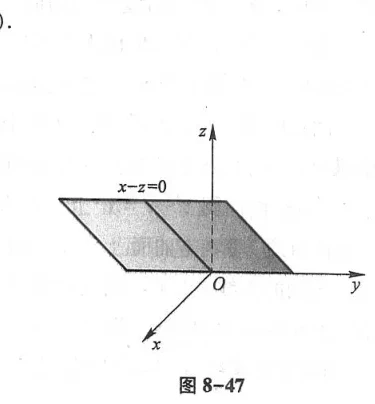
二、空间曲线的参数方程
动点在空间运动的轨迹可以用参数 $t$ 表示为空间曲线的参数方程：
$$\begin{cases} x = x(t) \\ y = y(t) \\ z = z(t) \end{cases}$$
设动点在圆柱面 $x^2 + y^2 = a^2$ 上以等角速度 $\omega$ 绕 $z$ 轴旋转，同时以等速度 $v$ 沿 $z$ 轴正向平移，求动点轨迹（圆螺旋线，图 8-48）的参数方程.
解 设初始时刻 $t=0$ 时点在 $(a, 0, 0)$，则 $t$ 时刻旋转角为 $\theta = \omega t$，沿 $z$ 轴高度 $z = vt$. 令 $b = \frac{v}{\omega}$，得到圆螺旋线方程：
$$\begin{cases} x = a \cos\theta \\ y = a \sin\theta \\ z = b \theta \end{cases}$$
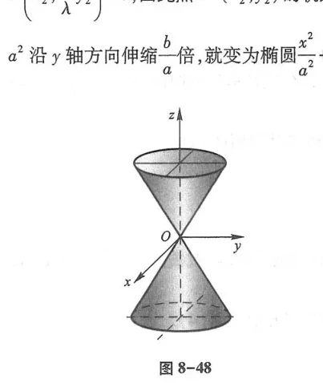
三、空间曲线在坐标面上的投影
设空间曲线 $C$ 的方程为 $\begin{cases} F(x, y, z) = 0 \\ G(x, y, z) = 0 \end{cases}$，消去变量 $z$ 后得到方程 $H(x, y) = 0$.
$H(x, y) = 0$ 表示一个母线平行于 $z$ 轴的柱面，称为曲线 $C$ 关于 $xOy$ 面的投影柱面. 该柱面与 $xOy$ 面的交线称为曲线 $C$ 在 $xOy$ 面上的投影曲线（图 8-49），方程为：
$$\begin{cases} H(x, y) = 0 \\ z = 0 \end{cases}$$
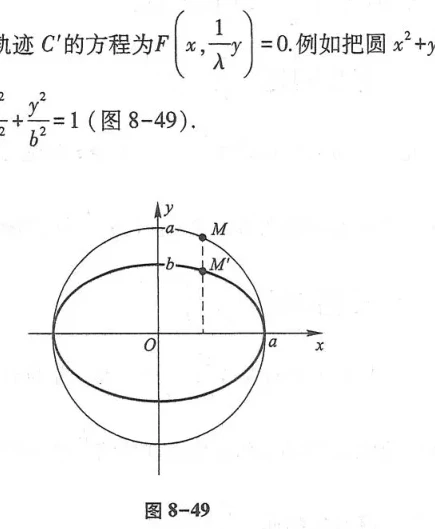
习题 8-6
1. 求圆母线半球面 $z = \sqrt{a^2 - x^2 - y^2}$ 与柱面 $x^2 + y^2 = ax$ 的交线在 $xOy$ 面上的投影方程.
2. 指出方程组 $\begin{cases} x^2 + y^2 + z^2 = 9 \\ x + y + z = 0 \end{cases}$ 表示什么几何图形.
总习题八
1. 选择题：
(1) 向量 $\boldsymbol{a}$ 与 $\boldsymbol{b}$ 正交的充要条件是（ ）.
A. $\boldsymbol{a} \times \boldsymbol{b} = \mathbf{0}$ B. $\boldsymbol{a} \cdot \boldsymbol{b} = 0$ C. $|\boldsymbol{a} + \boldsymbol{b}| = |\boldsymbol{a}| + |\boldsymbol{b}|$ D. $\boldsymbol{a} \parallel \boldsymbol{b}$
(2) 平面 $2x - 3y + z - 6 = 0$ 在三坐标轴上的截距依次为（ ）.
A. $3, -2, 6$ B. $2, -3, 1$ C. $-3, 2, -6$ D. $6, -6, 6$
2. 求垂直于两向量 $\boldsymbol{a} = (1, 1, 0)$ 和 $\boldsymbol{b} = (0, 1, 1)$ 的单位向量.
3. 求过点 $M(1, 1, 1)$ 且平行于平面 $2x - y + 3z - 1 = 0$ 的平面方程.
4. 求过点 $P(2, -1, 3)$ 且垂直于直线 $\frac{x - 1}{3} = \frac{y + 2}{2} = \frac{z - 1}{-1}$ 的平面方程.
5. 求两平行平面 $2x - y + 2z - 3 = 0$ 与 $2x - y + 2z + 6 = 0$ 之间的距离.
6. 证明：以 $\vec{AB}, \vec{BC}, \vec{CA}$ 为边的三角形的三条中线向量之和为零向量.